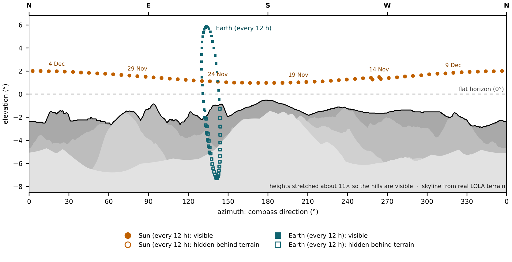
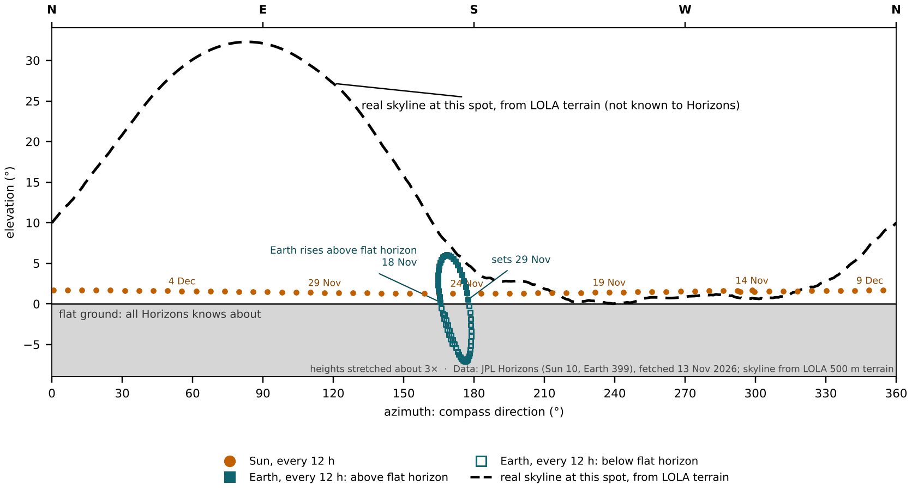

달 남극 착륙: 빛, 그림자, 그리고 시야
가이드를 읽기 전에
여러 우주기관과 기업이 앞으로 몇 년 안에 달 남극 부근에 착륙할 계획을 세우고 있습니다. NASA도 이곳에 장기 기지를 건설할 계획입니다. 착륙 임무의 성패는 두 가지 질문에 크게 좌우됩니다. 착륙선에서 태양이 보일까요? 지구도 보일까요? 태양이 보여야 태양전지판으로 전력을 생산할 수 있고, 지구가 보여야 지상과 직접 교신할 수 있습니다.
달 남극에서는 두 질문 모두 답하기가 쉽지 않습니다. 태양의 고도가 지평선 위 1~2°에 그치므로 수 km 떨어진 언덕도 착륙 후보지에 며칠씩 그림자를 드리울 수 있습니다. 지구 역시 하늘 낮은 곳에 있어 크레이터 가장자리 뒤로 가려지곤 합니다. 이 가이드에서는 그 이유와 연구자 및 임무 설계자가 실제 데이터로 가시성을 판단하는 방법을 설명합니다.
천문학을 미리 공부하지 않아도 읽을 수 있습니다. 일부 절에는 간단한 삼각함수가 나오지만, 풀이 예제에서 계산을 단계별로 보여 주며 수식을 건너뛰어도 나머지 내용을 이해할 수 있습니다. 각 장은 학습할 내용을 소개한 뒤 요약과 복습 문제로 끝납니다. 정답, 용어 해설, 참고 문헌은 가이드 끝에 있습니다.
목차
| 1장 | 하늘에서의 위치 |
| 2장 | 달 하늘의 태양과 지구 |
| 3장 | 지형과 빛, 그림자 |
| 4장 | 전력과 통신 |
| 5장 | 계산에 쓰이는 데이터 |
| 6장 | 착륙지 선정 |
| 복습 문제 정답 | |
| 용어 해설 | |
| 참고 문헌 |
1장
하늘에서의 위치
이 장에서 배우는 내용
- 두 각도를 이용해 하늘에서 태양과 지구의 위치를 나타내는 방법
- 수평 지평선과 지형 윤곽선의 차이
- 착륙선에서 태양과 지구의 위치를 모두 알아야 하는 이유
- 후보지 주변의 하늘 전체를 한 장의 파노라마로 펼쳐 나타내는 방법
1.1 방위각과 고도각
달 표면에 서서 태양을 바라본다고 생각해 봅시다. 다른 사람에게 태양의 위치를 알려 주려면 어느 방향을 향해야 하는지, 시선을 얼마나 들어야 하는지 두 가지를 말해 줘야 합니다. 천문학에서는 이를 두 각으로 나타냅니다.
방위각은 방향을 나타냅니다. 북쪽을 0°로 놓고 시계 방향으로 동쪽(90°), 남쪽(180°), 서쪽(270°) 순서로 잽니다. 고도각은 수평 지평선을 기준으로 위로 잰 각입니다. 여기서 수평 지평선은 주변 지면이 완전히 평평하다고 가정했을 때 눈높이에 놓이는 가상의 선입니다. 이 선에 물체가 있으면 고도각은 0°, 머리 바로 위에 있으면 90°입니다.
실제 지면에는 기복이 있습니다. 언덕, 크레이터 가장자리, 산은 방향에 따라 수평 지평선 위로 솟기도, 그 아래로 낮아지기도 합니다. 실제 지형이 하늘과 맞닿는 선을 지형 윤곽선이라고 합니다. 방위각별로 고도각이 달라지므로, 각 방위각에서 윤곽선의 고도각을 구해 나타냅니다.
이 가이드의 기본 원리는 간단합니다. 같은 방위각에서 물체의 고도각이 지형 윤곽선의 고도각보다 크면 그 물체를 볼 수 있습니다. 예를 들어 태양의 고도각이 1.5°라도 같은 방향의 능선이 3° 높이로 솟아 있다면 태양은 가려집니다.
1.2 착륙선에 필요한 조건
달 극지에 착륙하는 대부분의 착륙선은 태양광 발전을 이용합니다. 태양전지판은 태양이 보일 때만 전력을 생산할 수 있으므로, 태양이 가려진 동안에는 배터리에 의존해야 합니다. 또한 착륙선은 지구로 데이터를 전송하고 명령을 수신해야 합니다. 전파는 직진하므로 지구가 지형 윤곽선 위에 있을 때 직접 교신할 수 있습니다.
따라서 어떤 장소와 날짜를 검토하든 태양과 지구가 각각 지형 윤곽선 위에 있는지 확인해야 합니다. 또한 두 천체가 지형 윤곽선 위에 있다면 그 상태가 얼마나 오래 지속되는지도 살펴봐야 합니다. 이어지는 장에서는 이를 계산하는 방법을 설명합니다.
1.3 파노라마
한 지점에 서서 천천히 한 바퀴 돌면서 각 방향의 지형 윤곽선을 촬영한 뒤, 사진을 가로로 이어 붙인다고 생각해 봅시다. 이렇게 만든 긴 띠 모양의 그림을 파노라마라고 합니다. 가로축은 0°부터 360°까지의 방위각을, 세로축은 고도각을 나타냅니다.
이렇게 나타낸 지형 윤곽선 위에 태양과 지구의 위치를 함께 표시할 수 있습니다. 두 천체가 지형 윤곽선 위에 있으면 관측할 수 있고, 아래에 있으면 지형에 가려집니다. 실제 사례는 3장에서 살펴봅니다.
요약
- 하늘에서의 위치는 방위각과 고도각으로 나타냅니다. 방위각은 북쪽을 기준으로 시계 방향으로 측정한 각도이며, 고도각은 수평 지평선을 기준으로 위쪽으로 측정한 각도입니다.
- 지형 윤곽선은 실제 지면과 하늘이 맞닿는 경계이며, 방위각에 따라 그 높이가 달라집니다.
- 같은 방위각에서 물체의 고도각이 지형 윤곽선의 고도각보다 크면 그 물체를 볼 수 있습니다.
- 태양광 착륙선이 전력을 생산하려면 태양이 지형 윤곽선 위에 있어야 하며, 지구와 직접 교신하려면 지구 역시 지형 윤곽선 위에 있어야 합니다.
복습 문제
- 별의 방위각이 270°라면 어느 방향을 바라봐야 할까요?
- 수평 지평선과 지형 윤곽선은 어떤 차이가 있을까요?
- 태양의 고도각이 2.0°이고 같은 방향의 지형 윤곽선 고도각이 2.4°라면, 태양을 볼 수 있을까요?
- 지구와 직접 교신하려면 지구가 지형 윤곽선 위에 있어야 하는 이유는 무엇일까요?
2장
달 하늘의 태양과 지구
이 장에서 배우는 내용
- 달에 계절 변화가 거의 없는 이유
- 달 극지에서 태양이 수평 지평선 위 약 1.5°보다 높이 오르지 않는 이유
- 달 극지의 태양이 높이 뜨고 지는 대신 하늘을 한 바퀴 도는 모습
- 지구가 거의 같은 방향에 머물면서 서서히 오르내리는 이유
- 달에서 보이는 태양과 지구의 크기
2.1 자전축 기울기가 작은 달
지구의 자전축은 공전 궤도면에 수직인 방향에서 23.4° 기울어져 있습니다. 이 기울기가 계절을 만듭니다. 일 년의 절반은 북반구가 태양 쪽으로 기울고, 나머지 절반은 태양에서 멀어지는 쪽으로 기웁니다.
달의 자전축은 지구와 달이 태양 주위를 도는 평면에 수직인 방향에서 약 1.5°만 기울어져 있습니다. 따라서 달에는 계절 변화가 거의 없습니다. 달의 한 지점에서 보면 태양이 한 해 동안 거의 같은 경로를 따릅니다.
2.2 달 극지의 태양
달 남극점에 정확히 서 있다고 생각해 봅시다. 자전축이 발밑에서 위로 곧게 뻗어 있으므로 그곳의 수평 지평선이 이루는 평면은 달의 적도면과 평행합니다. 자전축 기울기가 작아 햇빛은 이 평면과 약 1.5° 이내의 각을 이루며 들어옵니다. 따라서 태양은 수평 지평선 위로 약 1.5°보다 높이 오르지 않습니다.
지구에도 같은 원리가 적용되지만 각도가 최대 23.4°에 이릅니다. 그래서 지구 극지의 백야에는 태양이 달 극지에서보다 훨씬 높이 올라갑니다. 그림에서 다음 관계를 얻을 수 있습니다.
극점에서 태양의 최대 고도각 ≈ 자전축 기울기 (2.1)
2.3 지평선을 따라 한 바퀴 도는 태양
달 적도 근처에서 태양은 지구에서처럼 뜨고, 높이 올랐다가 집니다. 다만 훨씬 느려서 태양을 기준으로 하루가 지구 시간으로 약 29.5일입니다. 극지에서는 태양이 수평 지평선 가까이에 머물면서 29.5일마다 관측자 주위를 한 바퀴 돕니다.
풀이 예제 2.1
극지에서 태양은 하늘을 얼마나 빠르게 돌까요?
태양은 29.53일에 360°를 움직입니다. 따라서 360° ÷ 29.53일 = 하루에 12.2°, 즉 시간당 약 0.5°씩 이동합니다. 태양의 겉보기 지름도 약 0.5°이므로(2.6절), 한 시간에 자기 지름만큼 움직이는 셈입니다.
극점에서 조금만 떨어져도 태양 경로가 더는 수평에 가깝지 않습니다. 29.5일에 한 바퀴 도는 동안 태양은 하늘 한쪽에서 조금 더 높이 올라가고 반대쪽에서는 내려갑니다. 오르내리는 폭은 극점과의 위도 차이에 대략 대응합니다. 남위 89°에서는 평균 고도각에서 위아래로 약 1°, 남위 85°에서는 약 5°씩 달라집니다.
2.4 달 하늘의 지구
달은 늘 거의 같은 면을 지구 쪽으로 향합니다. 따라서 달에서 지구를 보면 하늘과 거의 같은 위치에 있습니다. 앞면 한가운데에서는 머리 위에 가깝게 보이고, 극지에서는 달 앞면 방향의 수평 지평선 가까이에 보입니다.
다만 지구가 완전히 한자리에 고정되지는 않습니다. 달 궤도가 약간 타원형이고 기울어져 있어 지구에서 달을 보면 살짝 앞뒤로 흔들리는 것처럼 보입니다. 이를 칭동이라고 합니다. 달에서 보면 그 영향으로 지구가 약 한 달을 주기로 남북으로 최대 약 7°, 동서로 약 8°까지 움직입니다.
달 남극에서는 지구가 수평 지평선 근처에 있어 칭동의 남북 방향 성분에 따라 위아래로 오르내립니다. 한 달의 절반가량은 지구가 수평 지평선 위에, 나머지 절반은 그 아래에 있습니다. 지구 쪽에 크레이터 가장자리나 능선이 있으면 가려지는 시간이 더 길어질 수 있습니다.
2.5 시차
지구는 달과 가까워 관측자가 달 표면 어디에 서는지에 따라 하늘에서의 위치가 조금 달라집니다. 달 앞면의 중심과 가장자리에서 본 지구의 방향은 약 0.25° 차이가 나며, 서로 반대편 가장자리에서는 약 0.5° 차이가 납니다. 이렇게 관측 위치에 따라 겉보기 방향이 바뀌는 현상을 시차라고 합니다. 태양은 지구보다 약 390배 멀어서 이 효과가 매우 작습니다. 정밀하게 구하려면 달 중심 대신 착륙 후보지에서 본 지구의 방향을 계산해야 합니다.
2.6 태양과 지구의 겉보기 크기
태양과 지구는 하늘에서 일정한 크기의 원반으로 보입니다. 원반이 차지하는 각인 각지름은 실제 지름 D와 거리 d에 따라 결정됩니다.
각지름 = 2 × arctan (D / 2d) (2.2)
풀이 예제 2.2
달에서 태양과 지구는 얼마나 크게 보일까요?
지구의 반지름은 6,371 km이고 달까지의 거리는 약 384,400 km입니다. 각지름은 2 × arctan (6,371 / 384,400) = 1.90°입니다.
태양의 반지름은 696,000 km이고 달까지의 거리는 약 1억 4,960만 km입니다. 각지름은 2 × arctan (696,000 / 149,600,000) = 0.53°입니다.
따라서 달에서 지구는 태양보다 약 3.5배 넓게 보입니다.
태양이나 지구의 원반이 능선 뒤에 일부 가려지면 기준에 따라 가시 판정이 달라집니다. 달 극지에서는 둘 다 지형 윤곽선에 비해 천천히 움직이므로, 기준에 따라 태양이나 지구가 가려지는 시각이 몇 시간씩 달라질 수 있습니다. 계산에 사용한 기준을 명시해야 하는 이유입니다.
요약
- 달의 자전축은 약 1.5°만 기울어져 있어 계절 변화가 거의 없습니다.
- 극점에서 태양은 수평 지평선 위 약 1.5°보다 높게 뜨지 않습니다. 하루에 약 12°씩 움직여 29.5일에 한 번 관측자 주위를 돕니다.
- 극점에서 조금 떨어지면 태양은 한 바퀴 도는 동안 극점과의 위도 차이만큼 평균 고도각에서 위아래로 움직입니다.
- 지구는 하늘과 거의 같은 위치에 있지만 칭동으로 몇 도씩 움직입니다. 극지에서는 그 때문에 매달 지구가 수평 지평선 위로 올라왔다가 내려갑니다.
- 태양의 각지름은 0.53°, 지구는 1.90°입니다. 가시 여부를 계산할 때에는 지형 윤곽선 위에 원반의 중심, 일부, 전체 중 무엇이 있어야 하는지 명시해야 합니다.
복습 문제
- 달에는 왜 계절 변화가 거의 없을까요?
- 화성의 자전축은 약 25° 기울어져 있습니다. 화성의 극점에서 태양은 지평선 위로 대략 몇 도까지 올라갈까요?
- 달 남극에서 태양은 3일 동안 하늘을 몇 도 이동할까요?
- 남위 87°에서 보면, 태양이 29.5일에 한 바퀴 도는 동안 고도각은 평균값에서 약 몇 도씩 오르내릴까요?
- 식 2.2로 지구에서 본 달의 각지름을 구해 보세요. 달의 반지름은 1,737 km, 거리는 384,400 km입니다.
3장
지형과 빛, 그림자
이 장에서 배우는 내용
- 멀리 떨어진 능선이 극지 후보지를 며칠씩 가리는 이유
- 일부 크레이터 바닥에 수십억 년 동안 햇빛이 들지 않을 수 있는 이유
- 실제 데이터로 그린 달 하늘 파노라마 읽는 법
- 극지에서 지형 윤곽선의 작은 오차가 큰 시각 오차로 이어지는 이유
3.1 긴 그림자
태양이 낮을수록 그림자는 길어집니다. 달에는 햇빛을 그림자 쪽으로 산란시킬 대기가 없어 그림자 안이 매우 어둡습니다. 평평한 지면에서 높이 h인 능선이 만드는 그림자 길이 L은 태양의 고도각 e가 주어지면 다음과 같이 구합니다.
L = h / tan e (3.1)
풀이 예제 3.1
주변 평원보다 1,000 m 높은 능선이 있습니다. 태양의 고도각이 1°일 때 그림자는 얼마나 길까요?
L = 1,000 m / tan 1° = 1,000 m / 0.01746 = 57,300 m, 즉 약 57 km입니다.
능선 하나가 50 km 이상 떨어진 곳까지 가릴 수 있습니다. 실제로는 달의 곡률 때문에 그림자가 조금 짧아집니다. 곡률을 반영하는 방법은 5.6절에서 설명합니다.
크레이터 가장자리나 고립된 산처럼 극지의 높은 곳은 주변 그림자 위로 솟아 있어 한 달 중 대부분 햇빛을 받을 수 있습니다. 높은 지형 뒤편의 낮은 곳은 한 번에 며칠 또는 몇 주씩 어두울 수 있습니다.
3.2 영구음영지역과 얼음
극지 가까이에 있는 일부 크레이터는 너무 깊어서 낮게 뜬 태양의 빛이 바닥에 전혀 닿지 않습니다. 이런 곳을 영구음영지역이라고 합니다. 햇빛이 들지 않아 몹시 춥고, 일부는 명왕성 표면보다도 온도가 낮습니다. 혜성 충돌 등으로 유입된 물과 다른 물질은 아주 오랫동안 얼어 있을 수 있습니다.
이 얼음은 달 남극을 탐사하는 주요 이유 중 하나입니다. 미래 탐사대의 식수나 산소, 로켓 연료의 원료가 될 수 있기 때문입니다. 가까운 곳에서도 일조 환경은 극과 극입니다. 높은 지점은 연중 대부분 햇빛을 받지만, 바로 옆 크레이터 바닥에는 수십억 년 동안 햇빛이 들지 않았을 수 있습니다.
3.3 실제 파노라마 읽기
그림 3.2와 3.3은 1.3절에서 소개한 형식으로 실제 데이터를 그린 파노라마입니다. 지형 윤곽선은 NASA의 달 표면 레이저 측정값으로 계산했습니다(5장). 태양과 지구의 위치는 2026년 11월 14일부터 12월 14일까지 12시간 간격으로 계산했습니다. 지형은 고도각이 몇 도에 불과하므로 잘 보이도록 세로축을 확대했습니다.

그림 3.2에서 원을 먼저 봅시다. 2장의 설명처럼 태양은 방위각이 줄어들면서 오른쪽에서 왼쪽으로 하늘을 한 바퀴 돌고, 수평 지평선 위 약 1~2°에 머뭅니다. 이 후보지는 높은 곳에 있어 어느 방향에서든 지형 윤곽선이 태양보다 낮습니다. 따라서 이 한 달 동안 태양은 가려지지 않습니다.
사각형을 보면 지구는 옆으로 거의 움직이지 않고, 약 6°까지 올라갔다가 약 −7°까지 내려가며 세로로 긴 고리를 그립니다. 이는 2.4절에서 설명한 칭동 때문입니다. 빈 사각형은 지구가 능선 뒤로 가려진 시점을 나타냅니다. 이곳의 착륙선은 한 달 중 약 절반 동안 지구와 직접 교신할 수 없습니다.

그림 3.3의 후보지는 극점에서 약 4° 떨어져 있습니다. 이곳에서는 한 달 동안 태양의 고도각이 몇 도씩 오르내립니다(2.3절). 수평 지평선 아래에도 채워진 원이 표시되어 있습니다. 이는 후보지가 높이 약 5 km의 산 정상에 있어 지형 윤곽선이 수평 지평선보다 낮기 때문입니다. 따라서 태양이 수평 지평선 아래에 있더라도 지형 윤곽선 위에 있다면 여전히 볼 수 있습니다. 오른쪽 끝의 빈 원은 태양이 동쪽 언덕에 가려지는 시점을 나타내며, 이로 인해 약 3일간의 밤이 한 차례 발생합니다. 반면 북쪽에 위치한 지구는 한 달 내내 지형 윤곽선 위에 있습니다.
3.4 작은 오차가 만드는 큰 차이
극지 부근에서는 태양의 고도각이 매우 천천히 변합니다. 따라서 지형 윤곽선의 고도각에 작은 오차가 발생하더라도 계산된 일출이나 일몰 시각은 몇 시간씩 달라질 수 있습니다.
풀이 예제 3.2
남위 89°에서 태양의 고도각이 0.1° 변하는 데 얼마나 걸릴까요?
남위 89°에서 태양의 고도각은 29.53일 동안 평균값을 기준으로 위아래로 약 1°씩 변합니다. 진폭이 A이고 주기가 T인 주기 운동의 최대 변화율은 2πA/T입니다. 이 경우 2π × 1° / 29.53일 = 하루에 0.213°, 즉 시간당 0.0089°입니다.
고도각이 가장 빠르게 변할 때도 0.1° 변하는 데 0.1 / 0.0089 ≈ 11시간이 걸립니다. 따라서 지형 윤곽선의 고도각에 0.1°의 오차가 있다면 예상 일몰 시각은 약 11시간 달라질 수 있습니다.
이러한 이유로 극지에서 일출이나 일몰을 정밀하게 계산할 때는 분 단위의 특정 시각을 제시하기보다 가능한 시간 범위를 제시합니다.
요약
- 태양의 고도각이 1°일 때 높이 1,000 m인 능선은 50 km가 넘는 길이의 그림자를 드리웁니다.
- 일부 극지 크레이터 바닥에는 햇빛이 닿지 않습니다. 이러한 지역은 온도가 매우 낮아 물 얼음을 보존할 수 있습니다.
- 파노라마에서는 태양과 지구가 후보지의 지형 윤곽선 위에 있는지, 아래에 있는지 한눈에 확인할 수 있습니다.
- 극지 부근에서는 태양의 고도각이 천천히 변하므로 지형 윤곽선의 고도각에 0.1°의 오차만 있어도 예상 일몰 시각이 약 11시간 달라질 수 있습니다.
복습 문제
- 태양이 지평선 위 2°에 있을 때 높이 500 m인 언덕의 그림자 길이를 식 3.1을 이용해 계산해 보세요.
- 달의 그림자가 지구의 그림자보다 훨씬 어두운 이유는 무엇인가요?
- 그림 3.2에서 커넥팅 리지의 착륙선이 지구와 직접 교신할 수 없는 기간은 언제인가요?
- 그림 3.3에서는 태양이 수평 지평선 아래에 있어도 보이는 경우가 있습니다. 그 이유는 무엇일까요?
- 극지의 일몰 시각을 분 단위까지 확정해 제시하면 왜 오해를 불러일으킬 수 있을까요?
4장
전력과 통신
이 장에서 배우는 내용
- 극지에서 태양전지판을 수직으로 설치하는 이유
- 평균 일조율보다 가장 긴 연속 암흑 시간이 중요한 이유
- 착륙선과 지구 지상국 간 직접 교신에 필요한 조건
4.1 낮은 태양과 태양전지판
달 부근에서 태양을 정면으로 향한 면은 1m²당 약 1,361W의 햇빛을 받습니다. 이 값을 태양 상수라고 합니다. 태양전지판은 태양을 정면으로 향할 때 가장 많은 에너지를 받습니다. 햇빛의 입사 방향이 패널 표면의 법선과 이루는 각을 i라고 할 때, 단위 면적당 받는 전력은 다음과 같이 계산할 수 있습니다.
P = 1,361 W/m² × cos i (4.1)
풀이 예제 4.1
태양의 고도각이 1.5°일 때, 수평으로 눕힌 패널과 태양을 향해 수직으로 세운 패널을 비교해 봅시다.
수평 패널에서는 빛이 표면의 법선과 88.5°를 이룹니다. P = 1,361 × cos 88.5° = 1,361 × sin 1.5° = 36 W/m²입니다.
수직 패널에서는 i = 1.5°이므로 P = 1,361 × cos 1.5° = 1,360 W/m²입니다.
수직 패널이 받는 햇빛 전력은 수평 패널보다 약 40배 많습니다. 이 때문에 극지용 착륙선은 패널을 수직으로 세우고, 태양이 하늘에서 이동하는 방향에 맞춰 회전할 수 있는 기둥에 설치하기도 합니다.
4.2 배터리와 가장 긴 밤
태양이 가려지면 착륙선은 배터리에 의존해야 합니다. 추위 속에서 전자 장비를 적정 온도로 유지하는 데에도 많은 에너지가 필요하므로, 배터리만으로 버틸 수 있는 시간에는 한계가 있습니다. 따라서 햇빛 없이 배터리만으로 착륙선을 며칠 동안 운영할 수 있는지가 중요한 판단 기준이 됩니다.
후보지를 평가할 때 평균 일조율만을 기준으로 판단하기 쉽습니다. 하지만 그림 4.2는 이러한 판단에 어떤 문제가 있는지 보여 줍니다.
두 후보지의 평균 일조율은 같지만, 착륙선이 버틸 수 있는 곳은 한 곳뿐입니다. 중요한 것은 착륙 후 가장 긴 밤을 배터리만으로 버틸 수 있는지 여부입니다. 따라서 평균 일조율만 확인하기보다는 예정된 착륙일부터 시간대별 일조 여부를 살펴봐야 합니다.
4.3 지구와 교신하기
직접 교신하려면 착륙선 안테나와 지구 안테나를 잇는 직선 경로가 트여 있어야 합니다. 착륙선에서 볼 때 지구는 달의 지형 윤곽선 위에 있어야 합니다. 동시에 지구 지상국에서 달이 지평선 위에 보여야 합니다. 신호가 주변 건물과 대기의 가장 두꺼운 구간을 피할 수 있도록 보통 몇 도 이상의 고도각을 확보합니다.
지구가 하루에 한 바퀴 자전하므로 각 지상국에서 달이 보이는 시간은 하루의 일부입니다. 그래서 우주기관은 지구 여러 곳에 지상국을 운영합니다. NASA 심우주 통신망은 캘리포니아, 스페인, 호주에 대형 안테나를 두고 있습니다. 한국도 달 궤도선 다누리와 교신하기 위해 설치한 여주 35 m 심우주 안테나를 운영합니다. 착륙선에서 지구가 보이지 않을 때는 달 궤도를 도는 위성으로 신호를 중계할 수 있습니다.
요약
- 패널이 받는 햇빛 전력은 cos i에 비례합니다. 예제처럼 태양이 낮으면 수직 패널은 수평 패널보다 약 40배 많은 햇빛 전력을 받을 수 있습니다.
- 평균 일조율이 같은 두 곳도 가장 긴 밤의 길이는 크게 다를 수 있습니다. 착륙선은 가장 긴 밤을 버틸 수 있어야 합니다.
- 직접 교신하려면 착륙선에서 지구가 달의 지형 윤곽선 위에, 지상국에서 달이 지구의 지평선 위에 동시에 보여야 합니다.
복습 문제
- 햇빛이 패널 표면의 법선과 60°를 이루며 들어옵니다. 패널은 1 m²당 얼마의 햇빛 전력을 받을까요?
- C는 전체 시간의 80%, D는 65% 동안 햇빛을 받습니다. C가 반드시 더 나은 후보지인가요? 이유를 설명해 보세요.
- 착륙선의 배터리는 5일 동안 버틸 수 있습니다. 착륙 후 가장 긴 밤이 4.5일이라면 이곳은 안전할까요? 판단에 필요한 추가 정보는 무엇일까요?
- 달 탐사 임무에 지구 지상국이 여러 곳 필요한 이유는 무엇인가요?
5장
계산에 쓰이는 데이터
이 장에서 배우는 내용
- 태양과 지구의 위치를 계산하는 방법과 주의할 점
- 천체 위치만으로 후보지가 그림자에 들어가는지 판단할 수 없는 이유
- 궤도에서 달 표면의 높이를 재는 방법
- 수치표고모델의 의미와 격자 크기가 중요한 이유
- 수치표고모델로 지형 윤곽선을 계산하는 방법
5.1 천체력
태양과 달, 행성의 위치를 시간에 따라 정리한 표를 천체력이라고 합니다. NASA 제트추진연구소(JPL)는 널리 쓰이는 두 가지 도구를 제공합니다. SPICE는 커널이라는 데이터 파일을 읽고 사용자의 컴퓨터에서 천체 위치를 계산하는 무료 도구입니다. Horizons는 온라인 서비스입니다. 관측 대상과 달의 관측 지점, 날짜를 지정하면 JPL 서버에서 시간별 방위각과 고도각을 계산해 줍니다.
Horizons는 1996년부터 운영됐으며, 2021년 업데이트 이후 달 표면 지점을 수십 cm 수준으로 지정할 수 있습니다. 두 방법의 결과는 대체로 잘 일치합니다. 여러 프로젝트에서 SPICE로 위치를 일괄 계산한 뒤 일부를 Horizons 결과와 대조합니다.
5.2 기준 좌표계와 시간 척도
처음 사용할 때는 두 가지를 주의해야 합니다. 첫째는 기준 좌표계입니다. 북쪽과 경도 0°의 기준을 정하는 좌표축의 모음입니다. 달에는 흔히 쓰이는 좌표계가 두 가지 있는데, 동일한 위도와 경도라도 좌표계에 따라 약 875 m 떨어진 지점을 가리킬 수 있습니다. 레이저 관측 기반 달 표면 지도와 위치를 함께 쓸 때는 지도에 쓰인 MOON_ME 좌표계로 맞춰야 합니다.
둘째는 시간 척도입니다. 일상에서는 협정 세계시(UTC)를 쓰지만 천체력 계산은 태양계 질량중심 역학시(TDB)를 사용합니다. 현재 두 척도는 약 69초 차이가 납니다. 그사이 달 하늘에서 태양은 약 0.01° 움직입니다. 작은 각도지만 극지에서는 무시할 수 없는 경우도 있습니다(3.4절).
5.3 천체력만으로 알 수 없는 것
천체력의 고도각은 수평 지평선 기준입니다. 후보지 주변의 언덕은 계산에 들어가지 않습니다. 천체력에 태양 고도각이 1°로 나와도 같은 방향에 3° 높이의 능선이 있으면 후보지는 그림자에 가립니다.
그림 5.4에서 그 차이를 확인할 수 있습니다. 원과 사각형은 섀클턴 크레이터 가장자리에서 안쪽으로 약 1.8 km 들어간 사면 지점에 대해 Horizons가 계산한 위치입니다. 점선은 뒤에서 설명할 레이저 관측값으로 구한 실제 지형 윤곽선입니다.

수평 지평선만 기준으로 삼으면 11월 18일부터 29일까지 지구가 떠 있습니다. 실제 지형 윤곽선을 적용하면 한 달 동안 지구가 한 번도 보이지 않고, 계산한 태양 위치도 약 3분의 2가 크레이터 가장자리에 가려집니다. 가시성을 판단하려면 천체력과 지형이 모두 필요합니다.
5.4 레이저로 표면 높이 측정하기
NASA의 달 정찰 궤도선(LRO)은 2009년부터 달 궤도를 돌고 있습니다. 탑재 장비인 달 궤도 레이저 고도계(LOLA)는 표면에 짧은 레이저 펄스를 쏘고 돌아오는 데 걸리는 시간을 잽니다. 빛의 속력 c를 알면 지면까지의 거리는 다음과 같습니다.
거리 = c × t / 2 (5.1)
여기서 t는 레이저의 왕복 시간입니다. 추적으로 얻은 우주선의 위치에서 지면까지의 거리를 빼면 바로 아래 지면의 높이를 구할 수 있습니다. LOLA는 여러 해 동안 수십억 회의 측정을 수행했습니다. LRO의 궤적이 교차하는 극지 부근에서 특히 많은 데이터가 쌓였습니다.
풀이 예제 5.1
LRO가 지면에서 50 km 위에 있습니다. 레이저 펄스가 돌아오는 데 얼마나 걸릴까요?
식 5.1을 정리하면 t = 2 × 거리 / c = 2 × 50,000 m / (3.0 × 108 m/s) = 3.3 × 10−4 s, 즉 약 0.33 ms입니다. 높이를 1 m 이내로 측정하려면 레이저 왕복 시간을 약 7 ns 이내의 오차로 재야 합니다.
5.5 수치표고모델
개별 측정값을 모아 수치표고모델(DEM)을 만듭니다. 표면을 정사각형 격자로 나누고, 칸마다 지면 높이 한 값을 저장합니다. 이 칸을 픽셀이라고 합니다.
픽셀마다 높이 한 값만 기록하므로 픽셀보다 작은 지형은 평균에 묻힙니다. 픽셀이 크면 작은 바위와 돌출부가 사라져 지도에서는 그곳이 평평하게 보입니다.
그래서 착륙 후보지 주변에서는 픽셀 크기가 특히 중요합니다. 그림 5.8은 세 가지 픽셀 크기와 지름 100 m인 착륙 구역을 비교합니다.
LOLA 데이터로 만든 달 남극 수치표고모델 여러 종을 NASA 행성 측지 데이터 아카이브(PGDA)에서 무료로 이용할 수 있습니다. 표 5.1에 일부 자료를 정리했습니다. 각 자료는 아카이브의 제품 번호로 찾을 수 있습니다.
| 제품 | 연도 | 내용 |
|---|---|---|
| PGDA 69 | 2011 | 18.6년 주기에 걸친 극지 평균 일조율(Mazarico 외, 2011) |
| PGDA 78 | 2021 | 착륙 후보지 주변의 5 m 격자 수치표고모델 |
| PGDA 81 | 2023 | 남위 87°부터 극점까지의 5 m 격자 수치표고모델 |
| PGDA 90 | 2023 | 남위 80°까지 포함하는 광역 수치표고모델 |
| PGDA 104 | 2025–26 | LOLA 표고와 LROC 카메라 영상을 결합한 고해상도 모델 |
모델의 대부분 픽셀에는 직접 측정한 값이 없습니다. 그 값은 레이저 측정 궤적 사이를 보간해 채웁니다. 따라서 좋은 모델은 픽셀별 실제 측정 횟수와 표고의 예상 오차도 제공합니다.
5.6 지형 윤곽선 계산하기
컴퓨터는 후보지에서 한 방향으로 직선을 따라 일정 간격씩 나아가며 수치표고모델에서 지면 높이를 읽습니다. 각 지점에 대해 관측자 기준 고도각을 계산합니다. 그 직선에서 가장 큰 고도각이 해당 방향의 지형 윤곽선 높이입니다. 이를 여러 방향, 예를 들어 0.5° 간격의 720개 방향에서 반복하면 전체 윤곽선을 얻습니다. 이 데이터를 지평선 마스크라고 합니다.
달은 구형이므로 멀리 있는 지형은 관측자의 수평면 아래로 휘어 내려갑니다. 관측자와 달 중심의 거리를 r1, 지형 지점과 달 중심의 거리를 r2라고 합시다. 두 지점이 달 중심에서 이루는 각은 θ입니다(θ = 표면을 따라 잰 거리 ÷ 달 반지름, 단위는 라디안). 지형 지점의 고도각 e는 다음과 같습니다.
tan e = (r2 cos θ − r1) / (r2 sin θ) (5.2)
풀이 예제 5.2
관측자보다 1,500 m 높은 능선이 20 km 떨어져 있습니다. 달 반지름을 1,737.4 km로 놓고 능선의 고도각을 구해 보세요.
θ = 20 / 1,737.4 = 0.01151 rad입니다. r1 = 1,737.4 km, r2 = 1,738.9 km로 놓습니다.
r2 cos θ − r1 = 1,738.9 × 0.999934 − 1,737.4 = 1.385 km.
r2 sin θ = 1,738.9 × 0.01151 = 20.02 km.
tan e = 1.385 / 20.02 = 0.0692이므로 e = 3.96°입니다.
곡률을 무시해 tan e = 1.5 / 20으로 계산하면 4.29°가 나와 약 0.33°의 오차가 생깁니다. 극지에서는 일출과 일몰 시각이 하루 넘게 달라질 수 있는 크기입니다(풀이 예제 3.2 참고).
5.7 장기 평균과 실제 착륙 날짜
PGDA 69 같은 평균 일조 지도는 지점별로 여러 해에 걸친 일조 시간 비율을 한 값으로 보여 줍니다. 대략적인 후보 지역을 고르는 데는 도움이 되지만, 특정 날짜에 착륙한 뒤 어떤 일이 생길지는 알 수 없습니다. 4.2절에서 보았듯 가장 긴 밤의 길이도 가려집니다.
요약
- 천체력으로 태양과 지구의 위치를 구합니다. SPICE는 사용자의 컴퓨터에서, Horizons는 온라인에서 계산합니다.
- 위치를 계산할 때는 정확한 기준 좌표계와 시간 척도를 사용해야 합니다. 레이저 기반 지도에는 MOON_ME 좌표계를 씁니다.
- 천체력은 수평 지평선을 기준으로 하므로 후보지가 지형 그림자에 들어가는지까지는 알려 주지 않습니다.
- LOLA는 레이저 펄스의 왕복 시간으로 표면 높이를 측정합니다. 측정 결과는 한 칸마다 높이 한 값을 가진 수치표고모델에 저장됩니다.
- 지평선 마스크는 후보지에서 각 방향으로 뻗는 선을 따라 달의 곡률을 반영한 뒤, 선마다 최대 고도각을 취해 만듭니다.
복습 문제
- 천체력이란 무엇인가요?
- 한 달 좌표계에서 구한 위치를 다른 좌표계로 만든 지도와 결합하면 왜 계산이 틀릴 수 있나요?
- 레이저 펄스가 2.0 × 10−4 s 만에 돌아왔습니다. 지면까지 거리는 얼마인가요?
- 80 m 픽셀 수치표고모델이 지름 100 m인 착륙 구역 내부의 지점을 비교하기에 적합하지 않은 이유는 무엇인가요?
- 그림 5.4에서 Horizons는 11월 18일부터 29일까지 지구가 수평 지평선 위에 있다고 계산했는데, 후보지에서는 지구가 한 번도 보이지 않습니다. 이유를 설명해 보세요.
6장
착륙지 선정
이 장에서 배우는 내용
- 최근 달 극지 착륙에서 얻은 교훈
- 착륙 후보지를 한 점이 아닌 구역으로 보는 이유
- 착륙 순간의 조명 조건이 중요한 이유
- 이 가이드의 내용을 모아 후보지를 비교하는 방법
6.1 최근 착륙에서 얻은 교훈
2024~2025년 NASA의 상업용 달 탑재체 서비스(CLPS) 프로그램을 통해 무인 착륙선 세 대가 달에 도달했습니다. 착륙 결과를 보면 이 가이드에서 다룬 어려움을 이해할 수 있습니다.
오디세우스와 아테나는 달 남극 근처에 착륙했지만 둘 다 옆으로 넘어졌습니다. 아테나는 춥고 그늘진 크레이터에서 충분한 전력을 생산하지 못해 오래 작동하지 못했습니다. 제작사 인튜이티브 머신스는 극지 지형과 낮은 태양을 원인으로 꼽았습니다. 긴 그림자와 약한 빛 때문에 하강 중 항법 장치가 지면을 판별하기 어려웠습니다. 파이어플라이 에어로스페이스의 블루 고스트는 정밀 착륙에 성공했지만, 착륙 지점은 극점에서 멀고 조명 조건이 양호한 평원이었습니다.
6.2 착륙 구역
착륙선이 목표 좌표에 정확히 닿기는 어렵습니다. 그래서 임무 계획에는 목표 지점과 함께 허용 오차를 정합니다. NASA의 2024년 계획에서는 첫 유인 남극 착륙이 극점에서 6° 이내, 목표 지점에서 100 m 이내에 이루어져야 하고, 접근 중 조명 조건도 적절해야 했습니다. 2026년 11월 현재 이후 유인 임무에 대한 최신 수치는 공개되지 않아, 여기서는 100 m를 참고 기준으로 사용합니다.
목표 좌표뿐 아니라 착륙 구역 전체가 조건을 만족해야 합니다. 그림 5.8에서 보았듯, 지름 100 m인 구역 내부의 차이를 확인하려면 픽셀 크기가 수 m인 수치표고모델이 필요합니다.
6.3 착륙 접근 중의 조명
이 가이드는 주로 착륙 후의 일조 조건을 다루지만, 하강 마지막 몇 분의 조명도 중요합니다. 많은 착륙선은 카메라로 안전한 지점을 찾습니다. 태양이 아주 낮거나 접근 방향에 비해 불리한 방향에서 비치면 긴 그림자가 위험물을 감추거나 지면을 판별하기 어렵게 만듭니다. 아테나가 겪은 어려움이 그 예입니다.
앞에서 사용한 천체력과 지형 데이터에 예정 착륙 시각을 넣으면 이때의 조명 조건도 확인할 수 있습니다.
6.4 후보지와 날짜 종합 비교
앞 장의 내용을 모으면 후보지와 착륙 날짜를 비교할 수 있습니다. 각 후보지에서 다음을 확인합니다.
- 적합한 수치표고모델로 지평선 마스크를 계산합니다. 후보지 근처에는 세밀한 데이터를, 먼 곳에는 더 넓은 범위의 데이터를 사용합니다(5.6절).
- 올바른 좌표계와 시간 척도를 사용해 해당 후보지에서 본 태양과 지구의 위치를 임무 기간 동안 1시간 간격으로 계산합니다(5.1절과 5.2절).
- 각 천체의 고도각을 같은 방향의 지형 윤곽선과 비교합니다. 원반이 일부 가려지는 경우 어떤 가시성 기준을 썼는지 명시합니다(1.1절과 2.6절).
- 일조율, 배터리 운용 시간과 비교한 가장 긴 밤, 지구 가시 시간, 다음에 태양이나 지구가 가려지기까지 남은 시간으로 결과를 정리합니다(4장).
- 착륙 구역 전체와 착륙 순간을 확인하고, 발사가 늦어질 경우를 대비해 이후 날짜에도 비교를 반복합니다(6.2절과 6.3절).
극지 일몰 시각은 작은 오차에도 민감하므로(3.4절) 결과에 불확실성을 함께 제시합니다. 예를 들어 일몰이 일어날 수 있는 시간 범위를 표시합니다.
수업 활동: 태양광 착륙선에 적합한 곳은?
소형 태양광 착륙선이 2026년 11월 14일 달 남극에 도착해 12월 14일까지 작동해야 합니다. 햇빛이 없어도 배터리로 3일을 버틸 수 있습니다. 중계 위성이 없어 적어도 3일에 한 번은 지구로 직접 데이터를 보내야 합니다.
그림 3.2(커넥팅 리지)와 그림 3.3(말라퍼트 산괴)에서 두 후보지를 비교해 보세요. 기호 하나마다 12시간 차이가 납니다.
- 각 후보지에서 빈 원이 가장 길게 이어지는 구간을 찾으세요. 가장 긴 밤은 얼마이며 배터리로 버틸 수 있나요?
- 각 후보지에서 빈 사각형이 가장 길게 이어지는 구간을 찾으세요. 3일에 한 번 직접 교신해야 한다는 조건을 충족하나요?
- 어느 후보지를 고르겠나요? 선택한 이유를 두세 문장으로 써 보세요.
- 최종 결정을 내리기 전에 확인하고 싶은 추가 정보 한 가지를 제안해 보세요.
교사 참고 3번 문제에 정해진 답은 없습니다. 커넥팅 리지는 한 달 내내 햇빛을 받지만 11월 30일부터 12월 13일까지 지구가 보이지 않아 3일 교신 간격을 크게 넘깁니다. 말라퍼트 산괴에서는 한 달 내내 지구가 보이지만, 12월 9일부터 3일이 조금 넘는 밤이 시작되어 배터리 지속 시간을 넘깁니다. 두 후보지 모두 한 가지 요구를 충족하지 못합니다. 어느 문제를 해결하기 쉬운지를 따져 보는 것이 중요합니다. 예를 들어 커넥팅 리지에서는 중계 위성을, 말라퍼트 산괴에서는 조금 더 큰 배터리를 고려할 수 있습니다.
요약
- 최근 극지 착륙 사례는 지형의 기복과 낮은 햇빛이 착륙을 어렵게 만든다는 점을 보여 줍니다.
- 착륙 후보지는 하나의 구역입니다. NASA의 2024년 계획에서는 목표에서 100 m 이내를 기준으로 삼았습니다. 이 구역 안의 모든 지점이 조건을 충족해야 합니다.
- 착륙 후의 일조뿐 아니라 착륙 순간의 조명도 중요합니다.
- 종합 비교에는 지평선 마스크, 시간별 태양·지구 위치, 가시성 판정 기준, 일조·연속 암흑·지구 교신 시간 요약이 필요합니다.
복습 문제
- 왜 착륙 구역의 중앙뿐 아니라 구역 전체를 확인해야 할까요?
- 착륙 후 햇빛이 충분한 곳에서도 태양이 낮으면 착륙이 왜 위험해질 수 있나요?
- 발사가 일주일 늦어졌습니다. 원래 날짜에 적합했던 후보지가 새 날짜에는 부적합해질 수 있는 이유는 무엇인가요?
복습 문제 정답
1장
- 서쪽입니다.
- 수평 지평선은 눈높이에 놓이는 가상의 수평선입니다. 지형 윤곽선은 실제 지면과 하늘이 만나는 선으로, 방향에 따라 고도각이 달라집니다.
- 보이지 않습니다. 태양의 고도각(2.0°)이 같은 방향의 지형 윤곽선 고도각(2.4°)보다 낮습니다.
- 전파는 직진하므로 착륙선과 지구 사이의 경로를 지형이 가려서는 안 됩니다.
2장
- 달의 자전축은 약 1.5°만 기울어져 있어 한 해 동안 태양의 경로가 거의 달라지지 않습니다.
- 식 2.1에 따라 약 25°입니다.
- 3 × 12.2°로 약 37°입니다.
- 극점과의 위도 차이와 거의 같은 약 3°입니다.
- 2 × arctan (1,737 / 384,400) = 0.52°.
3장
- L = 500 / tan 2° = 500 / 0.0349로 약 14 km입니다.
- 달에는 햇빛을 그림자 안으로 산란시킬 대기가 없습니다.
- 빈 사각형인 구간, 즉 관측 기간 시작부터 11월 16일까지와 11월 30일부터 12월 13일까지입니다. 이때 지구의 겉보기 경로가 능선 뒤로 내려갑니다.
- 후보지가 산 정상에 있어 지형 윤곽선이 수평 지평선 아래에 놓입니다. 태양의 고도각이 0° 미만이어도 윤곽선보다는 높을 수 있습니다.
- 태양 고도각이 천천히 변하므로 지형 윤곽선이 조금만 달라져도 가려지는 시각이 몇 시간씩 바뀝니다(풀이 예제 3.2).
4장
- 1,361 × cos 60° = 680 W/m².
- 그렇지 않습니다. C에는 배터리 지속 시간을 넘는 긴 밤이 한 번 찾아올 수 있고, D의 암흑 시간은 여러 짧은 밤으로 나뉠 수 있습니다.
- 조건상 가능하지만 여유는 반나절입니다. 예상 밤 길이의 오차가 얼마나 큰지(3.4절), 착륙이 늦어지면 밤 길이가 어떻게 바뀌는지도 확인해야 합니다.
- 지구가 자전해 지상국 한 곳에서 달이 보이는 시간은 하루 중 일부에 불과합니다.
5장
- 태양, 달, 행성의 위치를 시간에 따라 정리한 표입니다.
- 같은 좌표라도 두 좌표계에서 약 875 m 떨어진 지점에 해당할 수 있어 지도에서 후보지 위치가 어긋납니다.
- 거리 = c t / 2 = 3.0 × 108 × 2.0 × 10−4 / 2 = 30 km입니다.
- 착륙 구역이 픽셀 한두 개에 걸쳐 있어 픽셀 내부의 표고 차이를 지도에서 구분할 수 없습니다.
- Horizons의 고도각은 수평 지평선 기준입니다. 이곳에서는 크레이터 가장자리가 지구의 최대 고도각보다 높아 지구가 계속 가려집니다.
6장
- 착륙선은 구역 안 어느 곳에든 내릴 수 있고, 극지에서는 수십 m만 이동해도 조건이 크게 달라집니다.
- 긴 그림자가 위험물을 가리거나, 하강 중 카메라가 지면을 판별하기 어렵게 만들 수 있습니다.
- 일주일 뒤에는 태양과 지구의 위치가 달라집니다. 새 착륙 시점에는 긴 밤에 접어들거나 지구가 가려져 직접 교신이 끊길 수 있습니다.
용어 해설
- 각지름
- 태양이나 지구 같은 원반이 하늘에서 차지하는 각도.
- 방위각
- 북쪽을 0°로 두고 시계 방향으로 잰 방향 각도.
- 수치표고모델(DEM)
- 정사각형 픽셀마다 지면 높이 한 값을 저장한 격자 데이터.
- 고도각
- 수평 지평선을 기준으로 천체나 물체까지 위로 잰 각도.
- 천체력
- 천체의 위치를 시간에 따라 정리한 표.
- 수평 지평선
- 주변 지면이 평평하다고 가정했을 때 눈높이에 놓이는 가상의 수평선.
- 지평선 마스크
- 후보지 주변 모든 방위각에서 지형 윤곽선의 고도각을 정리한 데이터.
- Horizons
- 천체력을 계산하는 JPL의 온라인 서비스.
- 칭동
- 지구에서 볼 때 달이 천천히 흔들리는 것처럼 보이는 현상. 달에서 보면 지구의 겉보기 위치가 몇 도씩 움직입니다.
- LOLA
- 달 궤도 레이저 고도계. LRO에 탑재된 지면 높이 측정 장비.
- LRO
- 달 정찰 궤도선. 2009년부터 달을 돌고 있는 NASA 우주선.
- LROC
- LRO에 탑재된 카메라 시스템.
- 파노라마
- 후보지 주변의 지형 윤곽선을 긴 띠로 펼쳐 그린 그림. 가로축은 방위각, 세로축은 고도각입니다.
- 시차
- 관측자 위치가 달라질 때 물체의 겉보기 방향이 달라지는 현상.
- 영구음영지역
- 극지 부근에서 태양빛이 한 번도 닿지 않는 지면.
- PGDA
- NASA 행성 측지 데이터 아카이브. 달의 표고와 일조 데이터 제품을 배포합니다.
- 기준 좌표계
- 천체 위치를 나타내는 좌표축의 모음. 북쪽과 경도 0°의 방향을 정합니다.
- 지형 윤곽선
- 실제 지면이 하늘과 맞닿는 선.
- 태양 상수
- 태양에서 지구와 달 정도로 떨어진 위치에서 태양을 향한 단위 면적이 받는 햇빛 전력. 약 1,361 W/m²입니다.
- SPICE
- 천체 위치를 계산하는 JPL의 소프트웨어 도구 모음.
- TDB, UTC
- 두 가지 시간 척도입니다. UTC는 일상에서 쓰는 협정 세계시이고, 천체력 계산에 쓰는 TDB는 현재 UTC보다 약 69초 앞섭니다.
참고 문헌
- Mazarico, E., Neumann, G. A., Smith, D. E., Zuber, M. T. and Torrence, M. H. (2011). Illumination conditions of the lunar polar regions using LOLA topography. Icarus, 211, 1066–1081.
- NASA Goddard Space Flight Center. Planetary Geodesy Data Archive (PGDA), products 69, 78, 81, 90 and 104. pgda.gsfc.nasa.gov
- NASA Jet Propulsion Laboratory. Horizons System. ssd.jpl.nasa.gov/horizons
- NASA Navigation and Ancillary Information Facility. SPICE Toolkit. naif.jpl.nasa.gov
- NASA Planetary Data System, Geosciences Node. LRO LOLA data. pds-geosciences.wustl.edu
- NASA (2024). Artemis landing system update: south pole landing requirements. NASA Technical Reports Server.
- NASA. Artemis IV mission overview. nasa.gov/mission/artemis-iv
- Firefly Aerospace (2 March 2025). Firefly's Blue Ghost lunar lander softly touched down in Mare Crisium. Press release.
- Intuitive Machines (2025). IM-2 mission update. Press release.
- Korea Aerospace Research Institute. Korea Deep Space Antenna, Yeoju.
그림 3.2, 3.3, 5.4는 NASA LOLA 수치표고모델(PGDA)과 JPL 천체력으로 이 가이드를 위해 제작했습니다. 웹사이트의 사진은 NASA에서 제공했습니다. 이 가이드는 NASA에 소속되어 있거나 공식 승인을 받은 자료가 아닙니다.